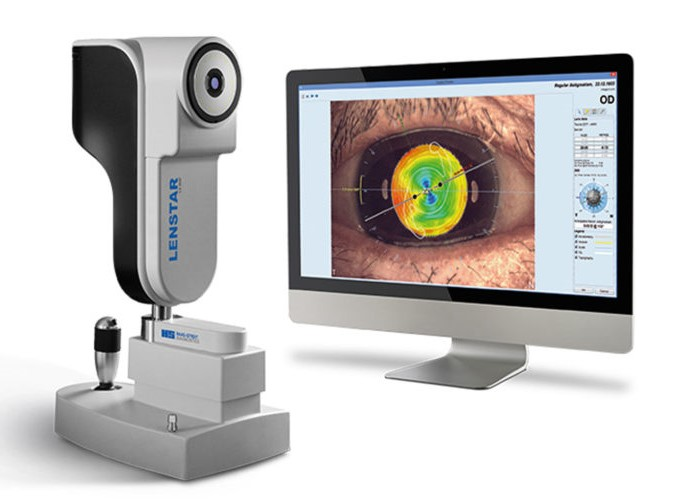

CAMPO VISUAL COMPUTADO
Se lo utiliza para los siguientes estudios:
- CAMPIMETRIA
TOMOGRAFIA DE COHERENCIA OPTICA
Se lo utiliza para los siguientes estudios:
- TOMOGRAFIA PAPILAR
- TOMOGRAFIA MACULAR
- TOMOGRAFIA ANTERIOR

MICROSCOPIO ESPECULAR
Se lo utiliza para los siguientes estudios:
- PAQUIMETRIA
- RECUENTO ENDOTELIAL

BIOMETRO OPTICO
Se lo utiliza para los siguientes estudios:
- ECOMETRIA
- TOPOGRAFIA ANTERIOR

YAG LASER
Se lo utiliza para los siguientes estudios:
- IRIDOTOMIA PERIFERICA
- CAPSULOTOMIA